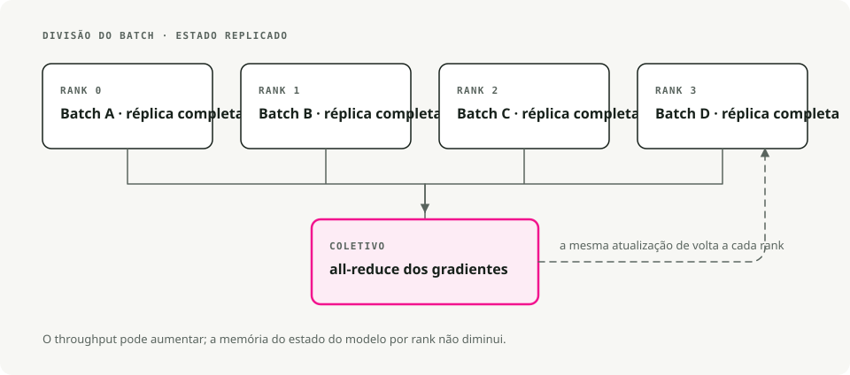
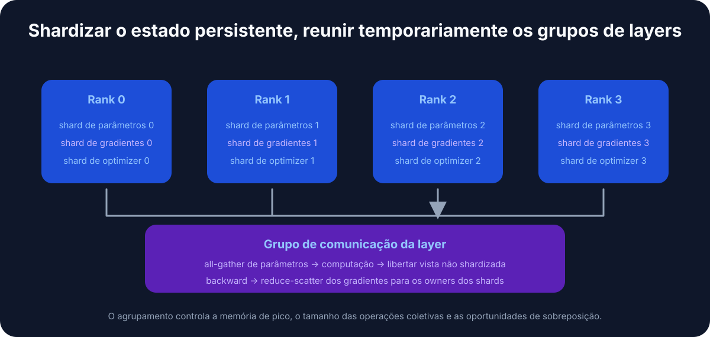
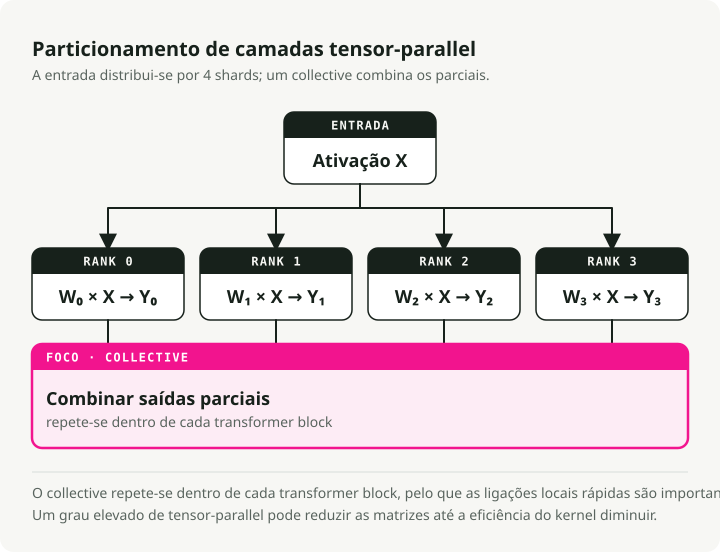
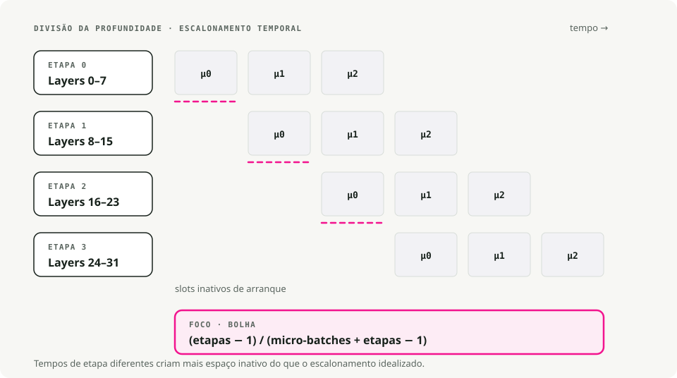
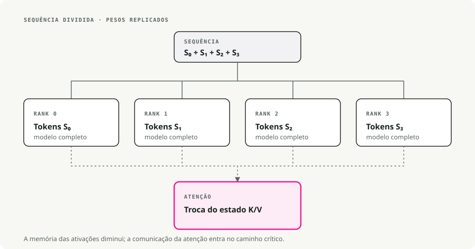
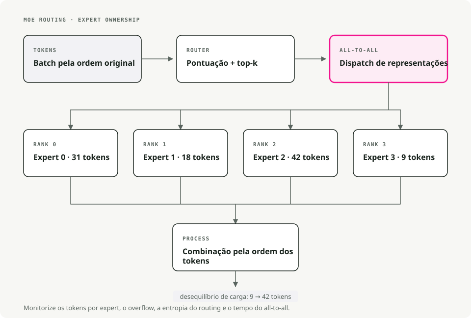
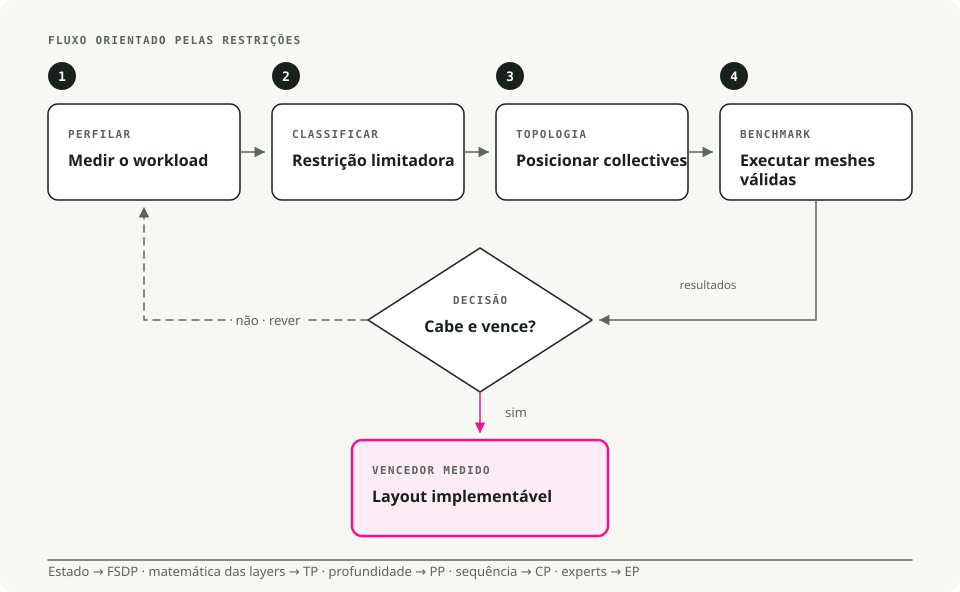

Tradução automática
Este artigo foi traduzido automaticamente a partir da versão original em inglês.
Escalar Grandes Modelos de Linguagem: Estratégias Multi-GPU e Multi-Nó Que Funcionam na Prática
Os LLMs atuais não cabem numa única GPU. Um modelo com 70B parâmetros precisa de cerca de 140GB só para os pesos em FP16, quase o dobro do que uma A100 suporta. Treinar ou servir estes modelos implica dividir o trabalho por múltiplas GPUs, e fazer essa divisão mal desperdiça grande parte do orçamento de computação.
Este é um guia prático pelas estratégias de paralelismo que realmente funcionam em produção, com base no Ultra-Scale Playbook da Hugging Face.
Pré-requisitos
Vai tirar mais partido deste conteúdo se já estiver confortável com:
- Backpropagation, gradientes e otimizadores como AdamW.
- Mecânica dos transformers: attention e redes feed-forward.
- Bases de PyTorch:
nn.Module,DataLoader, o loop de treino padrão.
Porque é que escalar importa
Há quatro fatores que o obrigam a sair de uma única GPU. Um modelo de 70B precisa de aproximadamente 140GB em FP16, quase o dobro dos 80GB de uma A100. Mesmo em oito A100s, um treino from-scratch de um modelo de 13B demora semanas. Contextos longos (32K tokens ou mais) ultrapassam a memória de uma única GPU antes de ter feito qualquer trabalho relevante. E sob carga de produção, a inferência distribuída é o que impede a tail latency de disparar.
1. Técnicas de paralelismo, explicadas de forma simples
1.1 Paralelismo de dados (DP)
A divisão mais simples. Cada GPU mantém o modelo completo e processa uma fatia diferente do batch. Após o backprop, as GPUs fazem all-reduce dos gradientes (média), e depois cada uma atualiza a sua própria cópia. Modelos idênticos, dados diferentes, pesos sincronizados.
Use-o quando o modelo cabe confortavelmente numa GPU e só quer processar mais batches por segundo. O custo de setup é quase nulo; o DDP em PyTorch é um wrapper de uma linha. O problema é a memória: cada GPU continua a manter o modelo completo, os estados do otimizador e os gradientes, por isso está a comprar throughput, não capacidade.

Ferramentas: PyTorch DDP, Horovod.
1.2 Paralelismo de dados totalmente fragmentado (FSDP)
DP, mas com consciência de memória. Parâmetros, gradientes e estados do otimizador são fragmentados entre GPUs. Durante o forward pass, cada GPU recolhe os parâmetros de que precisa das outras, executa o cálculo e depois larga os shards emprestados para libertar memória. O backward repete a recolha e depois reduz os gradientes para que cada GPU só atualize o seu próprio shard.
Esta é a camada a que deve recorrer quando o modelo já ultrapassou uma única GPU (tipicamente acima de ~10B parâmetros) e quer continuar a treinar numa única máquina sem reescrever o código. Na prática, o FSDP permite treinar modelos 4–8× maiores do que o que cabe numa GPU.

[!NOTE] Estágios ZeRO, em resumo O FSDP é frequentemente descrito em termos de ZeRO (Zero Redundancy Optimizer):
- Stage 1: fragmenta apenas os estados do otimizador (~4× de poupança de memória).
- Stage 2: fragmenta gradientes + estados do otimizador (~8× de poupança de memória).
- Stage 3: fragmenta parâmetros + gradientes + estados do otimizador (escalabilidade linear com N GPUs).
O PyTorch FSDP adota por omissão um comportamento equivalente ao Stage 3.
Ativar FSDP em PyTorch
from torch.distributed.fsdp import FullyShardedDataParallel as FSDP
# 1. Wrap your model
model = MyLLM()
model = FSDP(model)
# 2. Train as usual
output = model(input)
loss = output.sum()
loss.backward()
optimizer.step()
Ferramentas: PyTorch FSDP, DeepSpeed ZeRO-3.
1.3 Paralelismo tensorial (TP)
Divide camadas individuais entre GPUs. Pegue numa matriz de pesos, divida-a por colunas (ou linhas), e entregue cada bloco a uma GPU. Cada dispositivo calcula a sua parte do output; um all-reduce ou concatenação recompõe os resultados antes da camada seguinte. Isto acontece em todas as camadas.
O TP compensa quando as camadas individuais são demasiado grandes mesmo depois de FSDP — matrizes de attention enormes ou FFNs largas. Também assume um interconnect intra-nó rápido: NVLink ou NVSwitch, não PCIe. Entre nós, o all-reduce por camada torna-se o bottleneck e a vantagem desaparece. Um grau de TP entre 2 e 8 dentro de uma única máquina é o sweet spot típico.

Ferramentas: Megatron-LM, TensorRT-LLM, ColossalAI.
1.4 Paralelismo em pipeline (PP)
Divide o modelo verticalmente, por grupos de camadas. As camadas 1–10 ficam na GPU 1, as 11–20 na GPU 2, e assim sucessivamente. Depois envia micro-batches pelo pipeline para manter todas as etapas ocupadas: a GPU 1 termina o batch 1 e entrega-o à GPU 2, começando de imediato o batch 2. Com micro-batches suficientes em voo, todos os dispositivos estão a trabalhar em alguma coisa.
Use PP quando o modelo é tão profundo que nem o FSDP o consegue acomodar, ou quando precisa de abranger vários nós e a largura de banda entre nós é o fator limitante. A parte chata são as “bolhas” do pipeline — etapas inativas no início e no fim de cada batch — que se minimizam executando muitos micro-batches pequenos em vez de poucos grandes.

Ferramentas: DeepSpeed PP, Megatron-LM, GPipe.
1.5 Paralelismo de contexto (CP)
Para sequências muito longas. Divida um contexto de 64K tokens por, por exemplo, quatro GPUs (16K tokens cada). Cada GPU executa self-attention sobre o seu bloco local, e depois as GPUs trocam keys e values para calcular as partes de attention entre blocos. O resultado combinado é o mesmo que obteria ao executar o contexto completo num único dispositivo, sem o custo de memória.
Esta é a alavanca a usar quando o bottleneck é o comprimento do contexto, e não o tamanho do modelo: análise de documentos longos, raciocínio sobre livros inteiros, geração de código sobre um repositório grande. O CP é o que torna viável o treino com 100K+ tokens em hardware que, de outro modo, ficaria limitado a 8K.

Ferramentas: Picotron, Nanotron.
1.6 Paralelismo de especialistas (Mixture of Experts)
Especialização. Substitua camadas FFN densas por N sub-redes especialistas (8, 64, por vezes mais). Uma pequena rede de gating escolhe os top-k especialistas (normalmente top-2) para cada token. Só esses especialistas são executados para esse token; os restantes ficam inativos. Especialistas diferentes podem viver em GPUs diferentes, por isso o modelo pode ser enorme em número total de parâmetros enquanto o cálculo por token se mantém pequeno.
O Mixtral-8x7B tem 56B parâmetros no total mas apenas ~13B ativos por token; o Grok e o DeepSeek-V2 usam o mesmo truque. O preço é a complexidade do lado do treino: o balanceamento de carga entre especialistas é um problema de engenharia por si só, e a instabilidade no routing já fez divergir mais do que um treino MoE.

Ferramentas: Picotron, Nanotron.
Comparação rápida: que paralelismo deve usar?
| Technique | What it splits | Best for | Memory savings | Communication cost |
|---|---|---|---|---|
| Data Parallelism (DP) | Data batches | Models that fit on 1 GPU | None (copies model) | Low (only gradients) |
| FSDP | Model + optimizer + gradients | Models too big for 1 GPU | High (4–8×) | Medium |
| Tensor Parallelism (TP) | Individual layers | Huge layers, fast GPUs | Medium | High (per layer) |
| Pipeline Parallelism (PP) | Layer groups (stages) | Very deep models | Medium | Low (between stages) |
| Context Parallelism (CP) | Sequence length | Long contexts (64K+ tokens) | High (for activations) | Medium |
| Expert Parallelism (MoE) | Experts in MoE layers | Massive sparse models | None (more params, less FLOPs) | Medium |
Uma escolha por omissão razoável: comece com FSDP. Adicione TP quando as camadas individuais continuarem a ser demasiado grandes. Adicione PP quando precisar de escalar para múltiplos nós. Adicione CP quando o bottleneck for o comprimento do contexto.
2. Estratégias práticas de treino
Diferentes configurações de hardware pedem combinações diferentes. Eis o que eu faria de facto em três casos comuns.
2.1 Uma única máquina, 2–8 GPUs
Use primeiro FSDP puro — PyTorch FSDP ou DeepSpeed ZeRO-2/ZeRO-3 — gerido por accelerate ou torchrun da Hugging Face. Se camadas individuais de attention ou FFN continuarem demasiado grandes depois da fragmentação, adicione TP=2.
Algumas notas específicas de hardware. GPUs de consumo (RTX 4090 e semelhantes) em PCIe devem ficar por TP=1 ou TP=2 no máximo; o interconnect não acompanha mais do que isso. GPUs de servidor (A100, H100) com NVLink lidam bem com TP=2 a TP=4. E em oito GPUs numa única máquina, FSDP puro muitas vezes consegue tratar modelos até 70B sem precisar de TP de todo.
2.2 Cluster pequeno, 2–16 nós (≤128 GPUs)
Quer paralelismo 2D ou 3D: TP mais FSDP, opcionalmente mais PP. A configuração que funciona na prática:
- TP dentro de cada nó (TP=4 ou TP=8 com NVLink).
- FSDP entre nós para paralelismo de dados.
- Adicione PP se o modelo for tão profundo que nem o FSDP o consiga acomodar, dividindo-o verticalmente entre nós.
A razão para esta configuração funcionar: o NVLink é suficientemente rápido para lidar com o tráfego por camada do TP, enquanto o InfiniBand entre nós só tem de sincronizar shards do FSDP, o que é uma comunicação muito mais barata. Efeito líquido: minimiza a largura de banda entre nós, que é quase sempre o bottleneck nesta escala.
Quando adicionar PP, defina a contagem de micro-batches para pelo menos 4× o grau do pipeline. Abaixo disso, as bolhas comem o throughput.
2.3 Cluster grande (centenas a milhares de GPUs)
É aqui que o paralelismo 4D (DP × TP × PP × CP) começa a fazer sentido. Mapeie cada dimensão para a topologia do seu hardware e use Megatron-LM ou Nanotron — suportam 4D de origem, e implementar isto de raiz é um projeto.
Realisticamente, só precisa disto quando está a fazer pretraining de modelos com 70B+ e janelas de contexto de 32K+ a partir do zero. A maioria dos cenários de fine-tuning, mesmo em modelos grandes, não precisa.
Um exemplo concreto. Treinar um modelo de 70B com contexto de 32K em 512 GPUs:
- TP=8 dentro de cada nó de 8 GPUs.
- PP=4 entre quatro nós.
- CP=4 para o contexto longo.
- DP=4 para throughput.
- 8 × 4 × 4 × 4 = 512 GPUs.
A eficiência de escalabilidade numa configuração destas fica em torno dos 70–80% com bom InfiniBand, e pode ir até ~85% com tuning cuidadoso. Abaixo disso, está a deixar dinheiro real em cima da mesa.
3. Ferramentas que vale a pena aprender
Um pequeno cheat sheet para escolher a certa:
| Tool | When to use | Learning curve | Best for |
|---|---|---|---|
| Hugging Face Accelerate | Any distributed training with minimal code changes | ★☆☆☆☆ | Beginners, quick prototypes |
| PyTorch FSDP | Medium-to-large models (1–30B) on a single node | ★★☆☆☆ | The common case |
| DeepSpeed ZeRO | Multi-node training with good documentation | ★★★☆☆ | Production training |
| Megatron-LM | Very large models (70B+), 3D/4D parallelism | ★★★★☆ | Production at scale |
| Nanotron | Learning and research on modern parallelism | ★★★☆☆ | Education, experimentation |
| vLLM | Fast inference with PagedAttention and KV caching | ★★☆☆☆ | Serving in production |
| TensorRT-LLM | Maximum inference speed on NVIDIA GPUs | ★★★★☆ | Production inference optimization |
Configuração FSDP mínima com accelerate
compute_environment: LOCAL_MACHINE
distributed_type: FSDP
fsdp_config:
fsdp_auto_wrap_policy: TRANSFORMER_BASED_WRAP
fsdp_backward_prefetch: BACKWARD_PRE
fsdp_state_dict_type: SHARDED_STATE_DICT
machine_rank: 0
main_process_ip: null
main_process_port: null
main_training_function: main
mixed_precision: bf16
num_machines: 1
num_processes: 8
use_cpu: false
Se estiver a começar, eu usaria o Hugging Face Accelerate para pôr algo a funcionar, e só depois descia para PyTorch FSDP ou DeepSpeed quando precisasse de controlo mais fino.
4. Um framework de decisão

A imagem acima reflete o que eu faria na prática: FSDP primeiro, TP quando as camadas são demasiado grandes, PP para profundidade multi-nó, CP para contexto longo. Só adicione complexidade depois de a abordagem mais simples ter realmente esgotado margem.
5. O cheat sheet Ultra-Scale
A equipa da Hugging Face juntou um resumo visual de uma página que cobre grande parte do que está acima:

Conclusão
O FSDP resolve a maioria dos casos com que se vai deparar. O TP encaixa dentro de um nó quando as camadas individuais continuam sem caber. O PP distribui o modelo por vários nós quando a profundidade é a restrição. O CP entra quando é o comprimento do contexto que o está a fazer ficar sem memória. O princípio comum a todos é alinhar a estratégia de paralelismo com a topologia de hardware que realmente tem, e só adicionar uma nova dimensão quando a mais simples já tiver esgotado.
Leitura adicional:
- Hugging Face Ultra-Scale Playbook — o guia interativo em que este artigo se baseia.
- PyTorch FSDP Tutorial — o guia oficial para começar.
- DeepSpeed Tutorials — documentação completa do DeepSpeed.